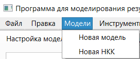

1. Для создания новой НКК необходимо воспользоваться опцией «Новая модель» меню «Файл». В результате будет создана пустая новая модель. При этом предыдущая модель не удалится. Её можно увидеть в меню «Модели»:

2. Аналогично сохранение текущей модели происходит при загрузке сохраненной модели, создании новой модели на основе шаблона или объединении моделей.
3. Для переключения на необходимую модель необходимо выбрать её название в списке меню «Модели». В результате в рабочей области основного окна отобразится информация о выбранной модели.